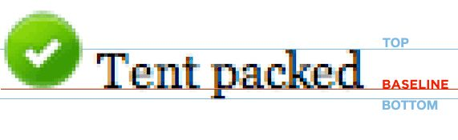

https://www.zhihu.com/question/21558138
要理解这个问题，首先要弄明白CSS对于 display: inline 元素的 vertical-align 各个值的含义。vertical-align 的默认值是 baseline，这是一个西文排版才有的概念：
可以看到，出现在baseline下面的是 p 啊，q 啊, g 啊这些字母下面的那个尾巴。
对比一下 vertical-align 的另外两个常见值，top 和 bottom:

可以看到，baseline 和 bottom 之间有一定的距离。实际上，inline 的图片下面那一道空白正是 baseline 和 bottom 之间的这段距离。即使只有图片没有文字，只要是 inline 的图片这段空白都会存在。到这里就比较明显了，要去掉这段空白，最直接的办法是将图片的 vertical-align 设置为其他值。如果在同一行里有文字混排的话，那应该是用 bottom 或是 middle 比较好。另外，top 和 bottom 之间的值即为 line-height。假如把 line-height 设置为0，那么 baseline 与 bottom 之间的距离也变为0，那道空白也就不见了。如果没有设置 line-height，line-height 的默认值是基于 font-size 的，视渲染引擎有所不同，但一般是乘以一个系数（比如1.2）。因此，在没有设置 line-height 的情况下把 font-size 设为0也可以达到同样的效果。当然，这样做的后果就是不能图文混排了。